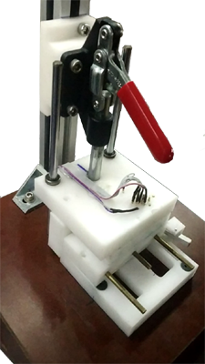

This a completely customizable tesing and programming bench for printed circuit boards that can be used in small scale production.
Vision
We all know how important it is for any hardware company to ensure that each product that they ship provides the same efficiency which was is promised to the customer. For this the product has to undergo a series of quality control testes before the final firmware is loaded and the product is packaged for shipping. This is often manual in small firms producing various products. During my summer internship I was presented with the problem and was asked to come up with a solution that can reduce the manual process of testing each component and hence increasing speed and reducing human error while keeping the price low. A rig was built that enabled the company to program as well as test the circuits produced automatically, hence, improving the quality and productivity during manufacture of the product.
Useage / Working
The complete setup can be broken into 3 main parts viz.
- The mechanical contraption
- The embedded hardware and
- The operating software
I will be demonstrating how each of these parts come together to build up the final testing and programming rig.
The mechanical structure was built using Aluminum socket, rods and clamps fixed on a box made up of temperature
resistant Bakelite along with a lever attached to the machined acrylic pieces that contains pogo pins for connection
to the circuit board to be tested. This ensured a rugged design for long-term usage.
This rig connects to a computer via USB to communicate the progress.
To test/program a device the technician lifts the lever to reveal the machined slot where the circuit fits
perfectly. The circuit is placed in that groove and the lever is pulled back down, making secure connections to the
test-pads as well as to the programming pads.
The device then undergoes a series of tests designed for the circuit before it is finally programmed and packaged.
The mechanical design was easily adaptable to any new product simply by replacing the “product cassette” or the
pin/pad configurations and the product slot. There were a bunch of sensors included in this cassette to test
functionality of components such as IR Led, RF antenna transmit and receive range etc.
The upper plate consisted of pogo pins, which are simply spring-loaded contact pins along with some placers which
are used to align the circuit board relative to these pins.
The product or the test circuit for this type of testing requires to have exposed pads for the pins to connect to as opposed to In Circuit Testing.
These various pins on the upper plate reach the main circuit board responsible for testing and communication with the host computer. The testing circuit board was built to fit on an existing custom programmer board built by the company enabling the programmer to provide testing functionality. The circuit was designed using KiCad and routed on a two-layer PCB.
The main components of the design were ATMega 328 and a NRF52. The Wi-Fi functionality was also tested using the ESP32 connected to the base board.
The design included various independent circuits to test for different parameters simultaneously. This board was capable of performing tests related to:
- Power Management
- Antenna Power and SNR
- BLE and Wi-Fi Connection
- LED
- UART and SPI Bus
- Tactile switches or buttons
It also had several GPIOs that can be programmed to test other components in future.
This PCB communicated to the host PC Running a python-based application to display progress as well as to select various operations or testes required by the particular product.
The software to control the Jig was written completely using python. The GUI was supported by the pyQT5 library and utilized all the required tools such as avr-dude, ESP-IDF etc. required to program/test the circuit. The applicaion was completely modular, wherre the user can add or subtract a test feature for some other product in future. The screenshots above give a hint of the capabilities of the testing jig.